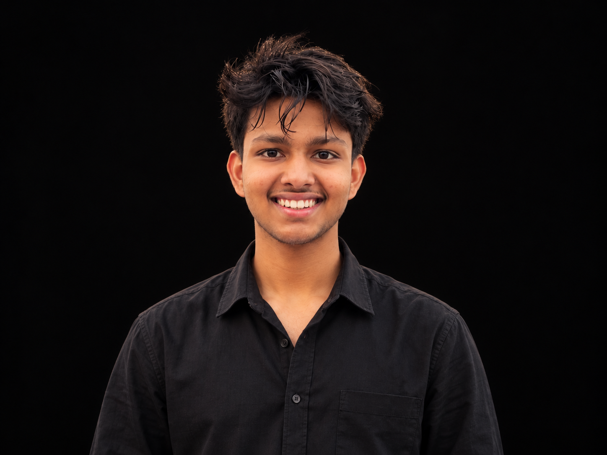

PROJECT 01 MECHANICAL / TEAM PROTOTYPE
01 MECHANICAL ENGINEERING / DIPLOMA
Made to
understand.
I’m Joshith Prahlad. Learning how machines work through design, prototypes and practical engineering.
VIEW MY WORKSCROLL TO EXPLOREDESIGN · MOTION · MAKINGHYDERABAD / IN

CREW / JP-01 JOSHITH PRAHLAD02 / PROJECT LOGPROJECT DETAILS
Projects at
different stages.
A team-built mechanical prototype and a website in development—documented honestly at their current stage.
PROJECT 02 WEB DESIGN / FOUNDATION
PROJECT MEDIA ILLUSTRATIVE ART ONLY · REAL BUILD PHOTOS AND SITE SCREENSHOTS CAN BE ADDED LATER
03 / EDUCATIONMECHANICAL ENGINEERING
Learning how
things work.
I’m currently studying for a Diploma in Mechanical Engineering, building my understanding through coursework and practical team projects.
SCHOOL EDUCATION COMPLETED / 01
Class 10
Vignan · CBSE
Completed with 75%.
DIPLOMA PROGRAM ONGOING / 02
Mechanical Engineering
Diploma / Polytechnic
Currently developing engineering fundamentals and practical problem-solving through study, workshop learning and prototype work.
04 / TOOL BAYCAPABILITIES
A toolkit
taking shape.
Areas I’m studying, practising and developing through my diploma and hands-on work.
Design & modelling
CAD design · 3D modelling · machine design · engineering design · components · mechanisms · product development
Engineering fundamentals
Engineering mechanics · calculations · analysis · materials · machine elements · mechanical systems
Drawing & workshop
Mechanical drawing · technical design · measurement & inspection · fabrication · assembly · workshop practice
Manufacturing & prototypes
Manufacturing · 3D printing · prototyping · practical engineering · design for fabrication
Visual communication
Photography · videography · video editing · thumbnail design
SKILLS IN MOTION ADD MORE BY ADDING A SKILL TAG
MECHANICAL DESIGN3D MODELLINGENGINEERING MECHANICSTECHNICAL DRAWINGMEASUREMENTPROTOTYPING
WORKSHOP PRACTICEPRODUCT DEVELOPMENTPHOTOGRAPHYVIDEO EDITINGVISUAL STORYTELLING
05 / OPERATOR FILEPROFILE JP-01
Start with
how it works.
I’m a Mechanical Engineering diploma student building a foundation through coursework, drawings, modelling, workshop practice and project-based learning.
My approach is simple: understand the principle, see how it behaves in the real world, then use it to make something useful. I’m especially interested in how mechanical systems can become more reliable, efficient and practical.
CURRENT FOCUS
APPROACH / JP-01Learn by makingStudy · test · improve
I like to understand the principle, try it in practice and learn from what the result shows.
JP
ME / 01
ME / 01
06 / CONTACTAVAILABLE
HAVE A PROJECT OR AN IDEA?
Let’s make
it work.
For engineering projects, collaborations, learning opportunities or creative work.
WHATSAPP / DIRECT MESSAGEMESSAGE ON WHATSAPPjoshithprahlad.bheemaneni@gmail.com